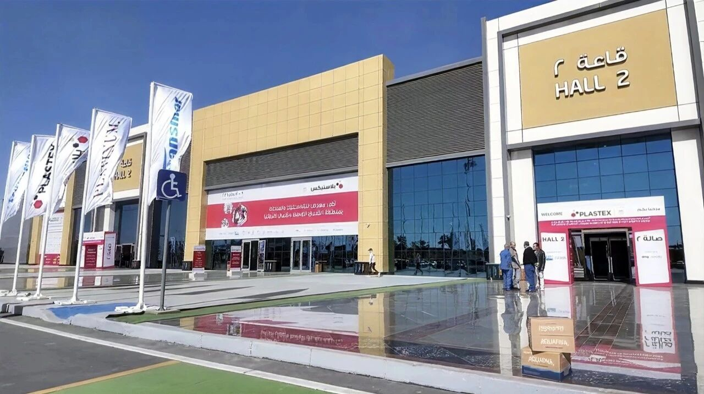
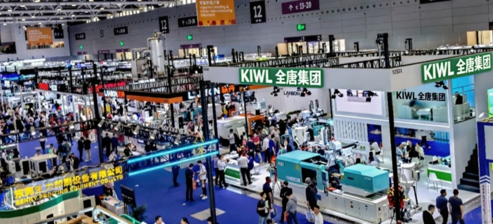
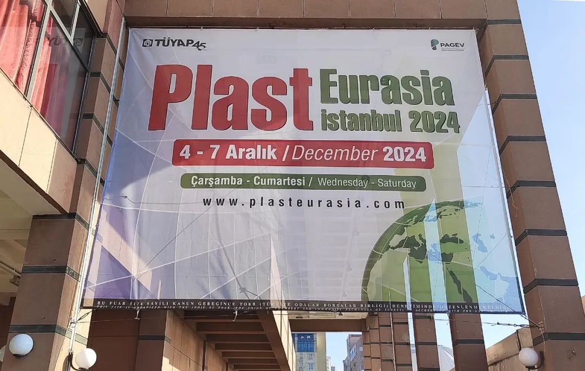
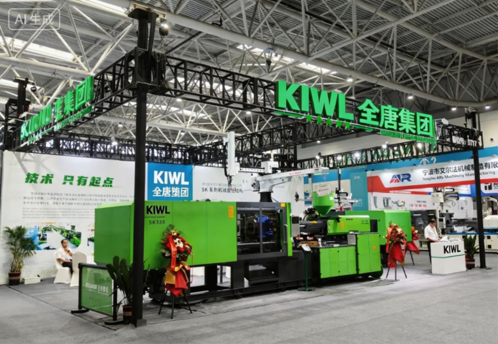
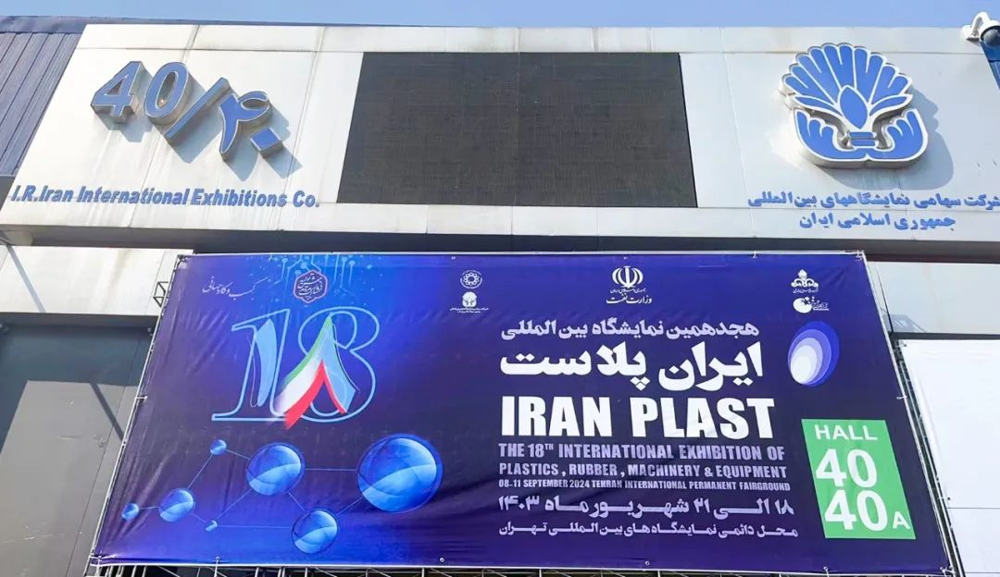
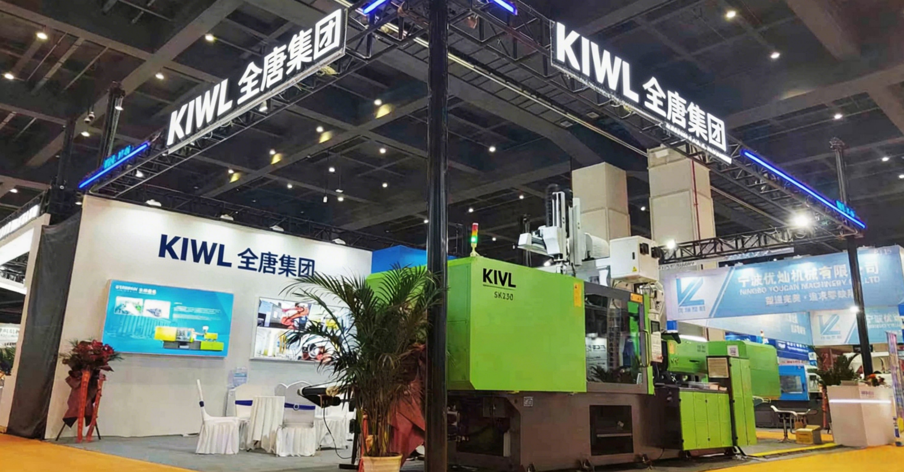
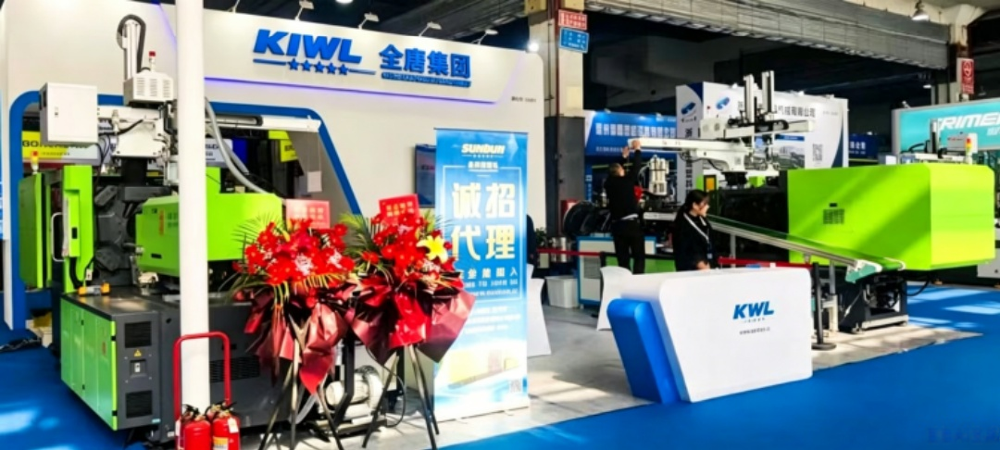

-

2026-01-15تحضر مجموعة تشيوان تانغ معرض PLASTEX 2026 في مصرمن 9 إلى 12 يناير 2026 بالتوقيت المحلي، افتُتح PLASTEX القاهرة، أحد أكبر معارض البلاستيك في أفريقيا...عرض التفاصيل + -
 2025-05-16رحلة مايو إلى الخارج | تحضر مجموعة تشيوان تانغ معرض السعودية للبلاستيك والمطاط والبتروكيماوياتمن 12 إلى 15 مايو 2025، افتُتح بجلالة معرض الرياض للبلاستيك والمطاط والبتروكيماويات 2025 لمدة أربعة أيام...عرض التفاصيل +
2025-05-16رحلة مايو إلى الخارج | تحضر مجموعة تشيوان تانغ معرض السعودية للبلاستيك والمطاط والبتروكيماوياتمن 12 إلى 15 مايو 2025، افتُتح بجلالة معرض الرياض للبلاستيك والمطاط والبتروكيماويات 2025 لمدة أربعة أيام...عرض التفاصيل + -

2025-04-15الافتتاح | تحضر مجموعة تشيوان تانغ معرض CHINAPLAS 2025 الدولي للمطاط والبلاستيكفي 15 أبريل 2025، استقبل مركز شنتشن الدولي للمعارض الحدث السنوي الكبير لصناعة المطاط والبلاستيك عالمياً...عرض التفاصيل + -
 2025-03-05استعراض مميز | تحضر مجموعة تشيوان تانغ الدورة الخامسة عشرة لمعرض صناعة البلاستيك في الصين (تشنغتشو)من 2 إلى 4 مارس 2025، افتُتحت الدورة الخامسة عشرة من معرض صناعة البلاستيك الصيني (تشنغتشو) في مركز تشنغتشو...عرض التفاصيل +
2025-03-05استعراض مميز | تحضر مجموعة تشيوان تانغ الدورة الخامسة عشرة لمعرض صناعة البلاستيك في الصين (تشنغتشو)من 2 إلى 4 مارس 2025، افتُتحت الدورة الخامسة عشرة من معرض صناعة البلاستيك الصيني (تشنغتشو) في مركز تشنغتشو...عرض التفاصيل + -

2024-12-09معرض ختام العام | تحضر مجموعة تشيوان تانغ معرض Plast Eurasia Istanbul 2024 في تركيامن 4 إلى 7 ديسمبر 2024 بالتوقيت المحلي، افتُتح الدورة الرابعة والثلاثون من معرض تركيا الدولي للبلاستيك والمطاط...عرض التفاصيل + -

2024-10-23تحضر مجموعة تشيوان تانغ الدورة الحادية والعشرين لمعرض بلاستيك تشجيانغ (تايتشو) للتجارةفي أكتوبر الذهبي، اختُتم رسمياً معرض تجارة البلاستيك الحادي والعشرون لمحافظة تشجيانغ (تايتشو) الذي استمر ثلاثة أيام...عرض التفاصيل + -

2024-09-12تحضر مجموعة تشيوان تانغ معرض إيران الدولي للبلاستيك 2024في 8 سبتمبر بالتوقيت المحلي، افتُتح المعرض المرموق Iran Plast 2024، الدورة الثامنة عشرة لمعرض إيران للبلاستيك والمطاط...عرض التفاصيل + -
 2024-04-27إطلاق جديد丨مجموعة تشيوان تانغتحضر بآلة حقن SE الكهربائية بالكاملCHINAPLAS 2024 国际橡塑...«CHINAPLAS 2024»، المعرض الدولي للمطاط والبلاستيك، بصفته أكبر معرض لصناعة البلاستيك والمطاط في آسيا...عرض التفاصيل +
2024-04-27إطلاق جديد丨مجموعة تشيوان تانغتحضر بآلة حقن SE الكهربائية بالكاملCHINAPLAS 2024 国际橡塑...«CHINAPLAS 2024»، المعرض الدولي للمطاط والبلاستيك، بصفته أكبر معرض لصناعة البلاستيك والمطاط في آسيا...عرض التفاصيل + -

2024-03-27تحضر مجموعة تشيوان تانغ الدورة الرابعة عشرة لمعرض صناعة البلاستيك في الصين (تشنغتشو)في 27 مارس 2024، افتُتح الدورة الرابعة عشرة من معرض صناعة البلاستيك الصيني (تشنغتشو) في مركز تشنغتشو الدولي...عرض التفاصيل + -

2024-03-11تحضر مجموعة تشيوان تانغ الدورة الحادية والثلاثين للمعرض الدولي للصناعة في الصين (وينتشو)أُقيم الدورة الحادية والثلاثون من المعرض الدولي للصناعة الصيني (وينتشو) من 8 إلى 10 مارس 2024 في مركز وينتشو...عرض التفاصيل +
الأخبار البارزة
- تحضر مجموعة تشيوان تانغ معرض PLASTEX 2026 في مصر
2026-01-15
- رحلة مايو إلى الخارج | تحضر مجموعة تشيوان تانغ معرض السعودية للبلاستيك والمطاط والبتروكيماويات
2025-05-16
- الافتتاح | تحضر مجموعة تشيوان تانغ معرض CHINAPLAS 2025 الدولي للمطاط والبلاستيك
2025-04-15
- استعراض مميز | تحضر مجموعة تشيوان تانغ الدورة الخامسة عشرة لمعرض صناعة البلاستيك في الصين (تشنغتشو)
2025-03-05
- معرض ختام العام | تحضر مجموعة تشيوان تانغ معرض Plast Eurasia Istanbul 2024 في تركيا
2024-12-09
- تحضر مجموعة تشيوان تانغ الدورة الحادية والعشرين لمعرض بلاستيك تشجيانغ (تايتشو) للتجارة
2024-10-23
- تحضر مجموعة تشيوان تانغ معرض إيران الدولي للبلاستيك 2024
2024-09-12
- إطلاق جديد | تحضر مجموعة تشيوان تانغ بآلة حقن SE الكهربائية بالكامل معرض CHINAPLAS 2024 الدولي للمطاط والبلاستيك
2024-04-27
- تحضر مجموعة تشيوان تانغ الدورة الرابعة عشرة لمعرض صناعة البلاستيك في الصين (تشنغتشو)
2024-03-27
- تحضر مجموعة تشيوان تانغ الدورة الحادية والثلاثين للمعرض الدولي للصناعة في الصين (وينتشو)
2024-03-11


واتساب

امسح الرمز
لتابعنا